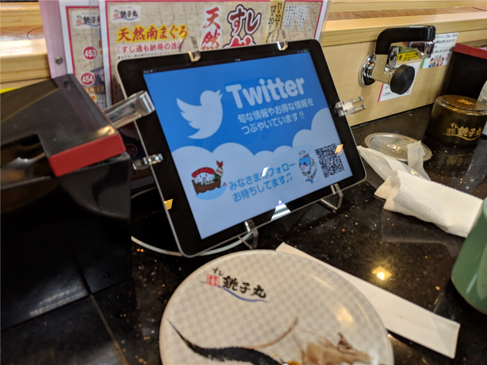
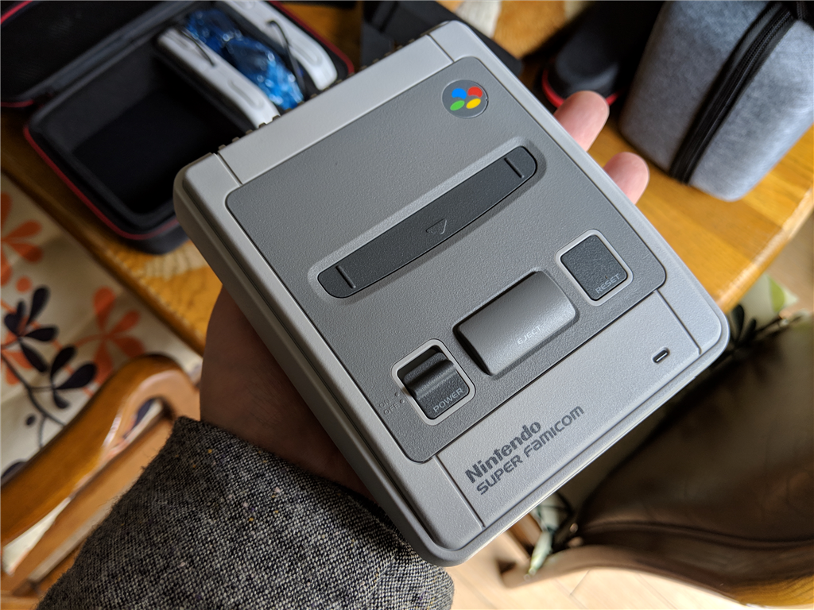

12月7日：お寿司食べた
公開日：

今日は平日だけどお休みにして、おかんと寿司を食いに行った（2週間ぶり2回目）。ま、たまにしか会わないしね、たまにはね。
おかん連れてきた (@ すし銚子丸 大和田店 - @choushimaru_fan in 市川市, 千葉県) https://t.co/nLu8GAu9Sj
— 独身貧乏高卒無職婚活ヒエラルキー最底辺やなぎ (@daruyanagi) December 7, 2018
銚子丸は久しぶりだったんだけど、受注が iPad になってた。さっそく iPad でビールを頼んだのだけど、出てこなかった。結局、お店の人に声をかけて出してもらったんだけど、これだったら iPad の意味はないよな。もともと銚子丸ってなんか元気がいい？のが売りだったと思うけど、依然来たよりも静かだなと感じた。客はそれなりに入ってたけど……。
お金のやり取りというのはヒトとヒトとのつながりからしか生まれないのに、結局そこがコストで、技術がヒトとヒトの間に入って疎遠にしていくんだな。残念なことだ――などと感じていたけど、どうも職人さんに直接注文してもいいらしい。職人さんに声をかけるのがちょっと恥ずかしい……みたいな人のために用意したのかもしれない。最初はあまり気分がよくなかったけど、ちょっと納得した。
神出鬼没やな、こいつら pic.twitter.com/LkLQwDZhmI
— 独身貧乏高卒無職婚活ヒエラルキー最底辺やなぎ (@daruyanagi) December 7, 2018
そのあとは家に帰って昼寝して、来週の一族クリパでお披露目する予定のスーファミミニを開封して遊んだ。

手のひらサイズでめっちゃ可愛い！
きゃー、かわいいいい pic.twitter.com/tZIHC7fDyF
— 独身貧乏高卒無職婚活ヒエラルキー最底辺やなぎ (@daruyanagi) December 7, 2018
サードパーティ製の専用ハードケースも一緒に買ったのだけど、コントローラーとケーブルがぴったり収まってよかった。たまたま実家に顔を出した弟2号も混ざって、スーパーマリオワールド？で遊んだけど、久しぶりにやったせいかノコノコすら避けられなくて死にまくってめっちゃ笑った。たまにはこういうのもいいな。来週、甥っ子、姪っ子も混ぜて遊ぶのが楽しみだ。
 Smatree ニンテンドークラシックミニスーパーファミコン収納ケース.2017 Classic mini super famicom収納箱、旅行やホームストレージに勧めます ((クラシックミニSFC用ケース) N180-2)")

- メディア:
- この商品を含むブログを見る